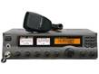
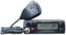
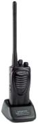
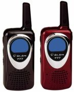
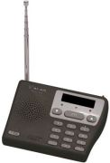
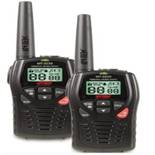

CB-Funk und andere freie Sprechfunkdienste
Hier folgt eine kurze Übersicht über die Hochfrequenztechnischen Daten der in Deutschland Zugelassenen
Sprechfunkdienste,welche für den Jedermann Frei verfügbar ist

CB-Funk
Der CB-Funk ist Privater Nahbereichsfunk im 27Mhz-Bereich und gehört zum
Nichtöffentlichen mobilen Landfunk.
Jedermann kann am CB-Funk Teilnehmen,wobei alle CB-Funker gleichberechitgt sind
Derzeit gibt es in Deutschland ca 300.000 aktive Anwender.
Seit dem 10 Semptember 2003 ist CB-Funk in Deutschland anmelde und gebüren frei.
Das gilt für AM , FM und auch für SSB.
Funkgerät Beispiel
 
Freenet
Freenet ist ein erst vor kurzem eingeführter anmelde und gebührenfreier Sprechfunk.
Funkgerät Beispiel

PMR 446
(Private Mobile Radio)
Pmr 446 ist anmelde und gebührenfreier Nahbereichsfunk für Sprachübertragung,
wobei nur Handfunkgeräte und Tischfunkgeräte mit fest eingebauter Antenne
zulässig sind.
Funkgerät Beispiel
 
SRD (Führer LPD)
SRD (Short Range Device – ehemals LPD,Low Power Device)
ist ein Sprechfunk Mit sehr
Geringer Leistung,welche sowohl anmelde als
auch gebührenfrei ist.
Funkgerät Beispiel
